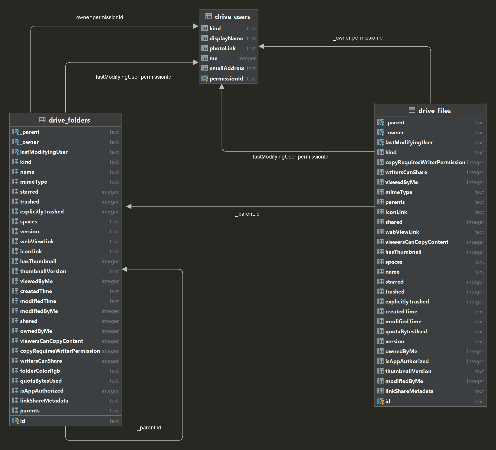
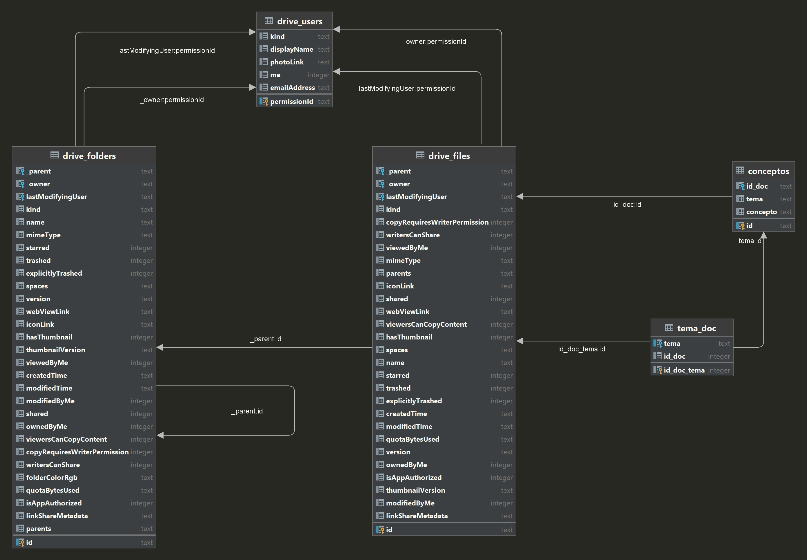

Este documento ejemplifica el uso de Google Drive como base de datos. Además, es un ensayo de uso de Observable JS como base para aplicaciones interactivas. Puede aprenderse un poco más sobre esto en https://quarto.org/docs/interactive/ojs/.
He recurrido a una pequeña herramienta que reúne toda la información referente al contenido del Google Drive a partir de una carpeta inicial. Me he apoyado en esta solución para recabar los metadatos hecha en Python. Esa información la organiza en una pequeña base de datos que deposita en un archivo SQLite. La estructura de esta base de datos se ilustra a continuación:

A esta estructura de metadatos de Google Drive le hemos agregado espacio para reunir la tabla de conceptos y el vínculo entre documentos y conceptos. Lo hacemos mediante dos tablas adicionales. De esta manera, la estructura de la base de datos quedaría como se ilustra en seguida.

Listas de metadatos del contenido en GD
Elige una tabla para desplegar los elementos de información recabados:
viewof tabla = Inputs.radio( ["drive_folders","drive_files","drive_users","conceptos","tema_doc", ], { label:"Tabla:",value:"drive_folders"})
Información recabada por Google Drive en la tabla seleccionada arriba:
db =FileAttachment("pronaces.db").sqlite()db.describe(tabla)
Veamos ahora el contenido de una carpeta seleccionada. Para referencia y ejemplo consideremos la carpeta Libro Semillas. Prácticamente todas las búsquedas programáticas que hagamos recurrirán al id único, asignado a la carpeta de interés. ¿Cuál es el id de esta carpeta?. Usemos los recursos que acabamos de describir para averiguarlo.
sql_id ="SELECT id, name FROM drive_folders WHERE name LIKE '%Libro semillas%'"resultado_1 = db.query(sql_id)Inputs.table(resultado_1, { columns: ["name","id"]})
Así que el id en Google Drive del documento que nos interesa es: 1uOrhAvjddeDxgyfIyDaoyKNivp63vUvO
Ahora podemos averiguar que documentos o carpetas están aquí. Esto depende de dos tablas diferentes: drive_files y drive_folders.
sql_base ="SELECT name, mimeType FROM drive_files WHERE _parent = '1uOrhAvjddeDxgyfIyDaoyKNivp63vUvO'"viewof consulta = Inputs.textarea({label:"Consulta",placeholder:"Ingresa una consulta SQL",value: sql_base,submit:true})fld_interes = db.query(consulta)Inputs.table(fld_interes, { columns: ["name","mimeType"]})
Conceptos
sunburst = {constroot=partition(flareData);root.each(d => d.current= d);const svg = d3.create("svg").attr("viewBox", [0,0, width, width]).style("font","15px sans-serif");const g = svg.append("g").attr("transform",`translate(${width /2},${width /2})`);const path = g.append("g").selectAll("path").data(root.descendants().slice(1)).join("path").attr("fill", d => { while (d.depth>1) d = d.parent;returncolor(d.data.name); }).attr("fill-opacity", d =>arcVisible(d.current) ? (d.children?0.6:0.4) :0).attr("d", d =>arc(d.current)); path.filter(d => d.children).style("cursor","pointer").on("click", clicked); path.append("title").text(d =>`${d.ancestors().map(d => d.data.name).reverse().join("/")}\n${format(d.value)}`);const label = g.append("g").attr("pointer-events","none").attr("text-anchor","middle").style("user-select","none").selectAll("text").data(root.descendants().slice(1)).join("text").attr("dy","0.35em").attr("fill-opacity", d =>+labelVisible(d.current)).attr("transform", d =>labelTransform(d.current)).text(d => d.data.name);const parent = g.append("circle").datum(root).attr("r", radius).attr("fill","none").attr("pointer-events","all").on("click", clicked);functionclicked(event, p) { parent.datum(p.parent||root);root.each(d => d.target= {x0:Math.max(0,Math.min(1, (d.x0- p.x0) / (p.x1- p.x0))) *2*Math.PI,x1:Math.max(0,Math.min(1, (d.x1- p.x0) / (p.x1- p.x0))) *2*Math.PI,y0:Math.max(0, d.y0- p.depth),y1:Math.max(0, d.y1- p.depth) });const t = g.transition().duration(750);// Transition the data on all arcs, even the ones that aren’t visible,// so that if this transition is interrupted, entering arcs will start// the next transition from the desired position. path.transition(t).tween("data", d => {const i = d3.interpolate(d.current, d.target);return t => d.current=i(t); }).filter(function(d) {return+this.getAttribute("fill-opacity") ||arcVisible(d.target); }).attr("fill-opacity", d =>arcVisible(d.target) ? (d.children?0.6:0.4) :0).attrTween("d", d => () =>arc(d.current)); label.filter(function(d) {return+this.getAttribute("fill-opacity") ||labelVisible(d.target); }).transition(t).attr("fill-opacity", d =>+labelVisible(d.target)).attrTween("transform", d => () =>labelTransform(d.current)); }functionarcVisible(d) {return d.y1<=3&& d.y0>=1&& d.x1> d.x0; }functionlabelVisible(d) {return d.y1<=3&& d.y0>=1&& (d.y1- d.y0) * (d.x1- d.x0) >0.03; }functionlabelTransform(d) {const x = (d.x0+ d.x1) /2*180/Math.PI;const y = (d.y0+ d.y1) /2* radius;return`rotate(${x -90}) translate(${y},0) rotate(${x <180?0:180})`; }return svg.node();}